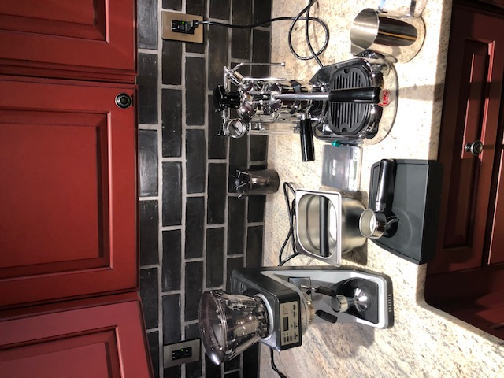

Welcome to my website! My name is Stelios Papoutsakis. I'm a 23 year old male from Eastern Massachusetts. For the last five years, I spent time in Portland Oregon while getting my bachelors degree in Electrical Engineering. I'm currently attending University of Massachusetts Amherst to obtain an M.S. in computer science. My goal is to become a full time software developer. I have a strong interest in cyber security, but I hope to be exposed to other fields through my degree and employment.
I'm interested in computer hardware, as I've built several desktop computers throughout the years, primarily for gaming. I'm currently looking into upgrading used thinkpad laptops to use as my daily driver, starting with the T460s. In my free time, I enjoy working out (weight lifting and jogging), cooking, watching the Boston Celtics and playing video games onmy gaming PC. I'm a huge coffee fan and love drinking espresso in addition to drip and cold brew. My parents recently purchased a la pavoni professional espresso machine as a graduation gift and I love it! Here is a picture of my setup!
